![The image shows a circuit diagram with two bulbs, a battery, and two switches. The battery is in the center of the diagram, with the positive terminal connected to the top of the circuit and the negative terminal connected to the bottom. The two bulbs are connected in parallel, with one bulb connected to the top of the circuit and the other bulb connected to the bottom. The two switches are also connected in parallel, with one switch connected to the top of the circuit and the other switch connected to the bottom](images/image61.png)
We use electricity in our day to day life. Have we ever wondered from where do we get this electricity? How does this electricity work? Can we imagine a day without electricity? If you ask your grandfather, you can come to know a period without electricity. They used oil lamps for light, cooked on fires of wood or coal. By the advent of electricity, our day to day works are made easy and the world is on our hands. What are the appliances those work on electricity? What are the materials those allow electricity to flow through? What are electric circuits? What are electric cells and batteries? Come on, let us descend into this lesson to know more about electricity.
Activity 1
List out the electrical appliances used in your home. Dash
Selvan and Selvi are twins. They are studying in sixth standard. They visited their grandparent’s village during summer vacation. At 6 O'clock in the evening Selvan's Grandfather switched on the light. The whole house was illuminated. Seeing this Selvan asked his grandfather "How do we get light by switching on the switch?" So, his grandfather took him to the nearest electricity board and enquired about the electricity.
Let us look in to the conversation given below.
Selvan: Sir, how do the electric bulb lighten up when we switch on the switch?
Engineer: Due to electricity.
Selvan: Oh! From where do we get this electricity?
Engineer: We get electricity from thermal power, hydel power, tidal power, wind power, solar power etc., as sources of electricity.
Selvan: Sir! Are these plants exist everywhere?
Engineer: No, these plants are constructed depending upon the natural resources available at that particular place. For example, we have thermal power plant in Neyveli, Tamilnadu as lignite is available there.
Selvan: Yes, I have seen wind mills near the hills of Tirunelveli District which has potential wind resource. Thank you, sir, for your valuable information.
Grandfather: (while walking back to home) Do you think we get electricity only from the above-mentioned sources.
Selvan: (while entering into the home, noticing the clock on the wall) Grandpa! look at that wall clock, how does it work?
Grandfather: It needs electrical energy to work. Apart from the above mentioned sources, we electricity from cells, and batteries.
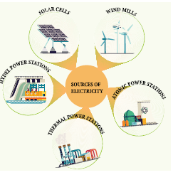
Selvan: Yes, Grandpa, now I am going to discuss about all these with Selvi.
What do you infer from the above dialogue? Any device from which electricity is produced is called the source of electricity. We get electricity from different sources.
The Major Electric power stations in
Tamilnadu are: Thermal stations (Neyveli in Cuddalore District, Ennore in Thiruvallur District), Hydel power stations (Mettur in Salem District, Papanasam in Tirunelveli District), Atomic power stations (Kalpakkam in Kanchipuram District, Koodankulam in Tirunelveli District), and Wind mills (Aralvaimozhi in Kanyakumari District Kayatharu in Tirunelveli District). Apart from these Solar panels which are prevalent in many places are used to produce electricity.
Let us discuss in shortly about working power stations.
1. Thermal Power stations
In thermal power stations, the thermal energy generated by burning coal, diesel or gas is used to produce steam. The steam thus produced is used to rotate the turbine. While the turbine rotates, the coil of wire kept between the electromagnet rotates. Due to electromagnetic induction electricity is produced. Here heat energy is converted into electrical energy.
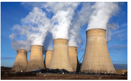
2. Hydel power stations
In hydel power stations, the turbine is made to rotate by the flow of water from dams to produce electricity. Here kinetic energy is converted into electrical energy. Hydel stations have long economic lives and low operating cost.
3. Atomic power stations
In atomic power stations, nuclear energy is used to boil water. The steam thus produced is used to rotate the turbine. As a result, electricity is produced. Atomic power stations are also called as nuclear power stations. Here nuclear energy is converted into mechanical energy and then electrical energy.
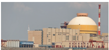
The steam thus produced is used to rotate the turbine. As a result, electricity is produced. Atomic power stations are also called as nuclear power stations. Here nuclear energy is converted into mechanical energy and then electrical energy.
4. Wind mills
In wind mills, wind energy is used to rotate the turbine to produce electricity. Here kinetic energy is converted into electrical energy.
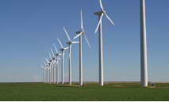
A device that converts chemical energy into electrical energy is called a cell.
A chemical solution which produces positive and negative ions is used as electrolyte. Two different metal plates are inserted into electrolyte as electrodes to form a cell. Due to chemical reactions, one electrode gets positive charge and the other gets negative charge producing a continuous flow of electric current.
Depending on the continuity of flow of electric current cells are classified in to two types. They are primary cells and secondary cells.
Primary Cells
They cannot be recharged. So, they can be used only once. Hence, the primary cells are usually produced in small sizes.
Examples
cells used in clocks, watches and toys etc., are primary cells.
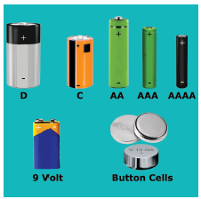
Secondary Cells
A cell that can be recharged many times is called secondary cell. These cells can be recharged by passing electric current. So, they can be used again and again. The size of the secondary cells can
be small or even large depending upon the usage. While the secondary cells used in mobiles are in the size of a hand, the cells used in automobiles like cars and buses are large and very heavy.
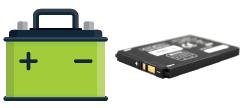
Examples
Secondary Cells are used in Mobile phones, laptops, emergency lamps and vehicle batteries.
Activity 2
From the following pictures, identify those use primary cell and secondary cell. Mark Primary cell as 'P' Secondary cell as 'S'.
Dash
dash
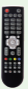
dash
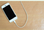
dash
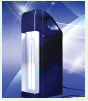
Dash
Battery
Often, we call cells as batteries. However only when two or more cells are combined together they make a battery. A cell is a single unit that converts chemical energy into electrical energy, and a battery is a collection of cells.
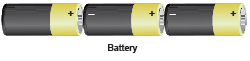
Activity 3
Take a dry cell used in a flashlight or clock. Read the label and note the following
1. Where is the plus and 'minus symbol?
2. What is the output voltage?
Look at the cells that you come across and note down the symbols and voltage.
Warning
All experiments with electricity should only be performed with batteries used in a torch or radio. Do not, under any circumstance, make the mistake of performing these experiments with the electricity supply in your home, farm or school. Playing with the household electric supply will be extremely dangerous.
Grandfather asked Selvi to bring torchlight. While taking the torchlight, it fell down and the cells came out. She puts the cells back and switched it on (Figure A)
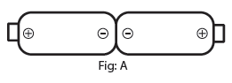
The torchlight did not glow. She thought the torchlight was worn out. She was afraid that grandfather might scold her. She started crying. Her uncle came there and asked the reason for crying. She conveyed the matter. Her uncle removed the cells and reversed them (Figure B)
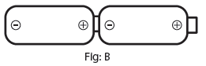
Now, the torch glows. Selvi’s face also glows. Uncle told her the reason and explained her about electric circuits.
Inside view of torch
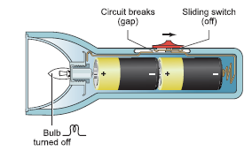
An electric circuit is the continuous or unbroken closed path along which electric current flows from the positive terminal to the negative terminal of the battery. A circuit generally has.
a) A cell are battery- a source of electric current
b) Connecting wires- for carrying current
c) A bulb- a device that consumes the electricity
d) A key or a switch- this may be connected anywhere along the circuit to stop or allow the flow of current.
a. Open Circuit
In a circuit if the key is in open (off) condition, then electricity will not flow and the circuit is called an open circuit. The bulb will not glow in this circuit.
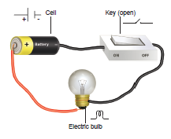
b. Closed Circuit
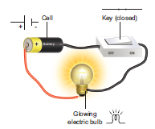
In a circuit if the key is in closed (on) condition, then electricity will flow and the circuit is called a closed circuit. The bulb will glow in this circuit.
Can you make a simple switch own by simple things available to you?
Types of Circuits
1. Simple Circuit
2. Series Circuit
3. Parallel Circuits
1. Simple Circuit
A circuit consisting of a cell, key, bulb and connecting wires is called a simple circuit.
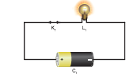
2. Series Circuit
If two or more bulbs are connected in series in a circuit, then that type of circuit is called series circuit. If any one of the bulbs is damaged or disconnected, the entire circuit will not work.
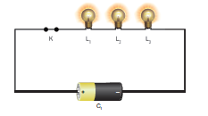
3. Parallel Circuit
If two or more bulbs are connected in parallel in a circuit, then that type of circuit is called parallel circuit.
If any one of the bulbs is damaged or disconnected the other part of the circuit will work. So parallel circuits are used in homes.
Symbols of Electric Components
In the circuits discussed above, we used the figures of electric components. Using electric components in complicated circuits is difficult. So, symbols of the components are used instead of figures. If these symbols used in electric circuits, even complicated circuits can be easily understood.
Serial number 1 |
Electric component. Electric cell |
Figure. 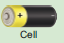 |
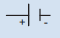 |
Remarks. Longer terminal refers positive and shorter terminal refers negative. |
Serial number 2 |
Electric component. Battery |
Figure. 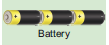 |
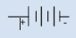 |
Remarks. Two or more cells connected in series |
Serial number 3 |
Electric component. Switch-open |
Figure. 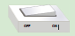 |
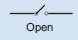 |
Remarks. Switch is in off position |
Serial number 4 |
Electric component. Switch-closed |
Figure. 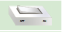 |
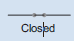 |
Remarks. Switch is in on position |
Serial number 5 |
Electric component. Electric bulb |
Figure. 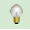 |
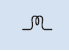 |
Remarks. The bulb does not glow |
|
|
Figure. 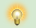 |
Remarks. The bulb glows |
|
Serial number 6 |
Electric component. Connecting wires |
Figure. 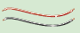 |
Remarks. Used to connect devices. |
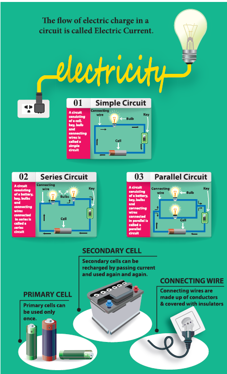
1. Electric Eel is a kind of fish which is able to produce electric current. This fish can produce an electric shock to safeguard itself from enemies and also to catch its food.
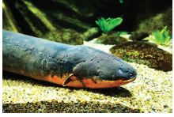
itself from enemies and also to catch its food.
More to Know
Ammeter is an instrument used in electric circuits to find the quantity of current flowing through the circuit. This is to be connected in series.
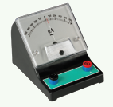
Will electric current pass throw all materials?
If an electric wire is cut, we could see a metal wire surrounded by another material. Do you know why it is so?
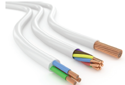
Conductors
The rate of flow of electric charges in a circuit is called electric current. The materials which allow electric charges to pass through them are called conductors. Examples: Copper, iron, aluminum, impure water, earth etc.
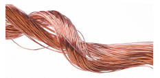
Insulators (Non-Conductors)
The materials which do not allow electric charges to pass through them are called insulators or nonconductors.
Examples: plastic, glass, wood, rubber, china clay, ebonite etc.,
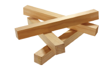
Activity 4
Connect the objects given in the table between A and B and write whether the bulb glows or not.
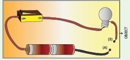
Serial number 1 |
Objects Pin |
Materials of the objects DASH |
Glow or not glow |
Serial number 2 |
Objects Match stick |
Materials of the objects DASH |
Glow or not glow |
Serial number 3 |
Objects Safety pin |
Materials of the objects DASH |
Glow or not glow |
Serial number 4 |
Objects Pencil |
Materials of the objects DASH |
Glow or not glow |
Serial number 5 |
Objects Metal spoon |
Materials of the objects DASH |
Glow or not glow |
Serial number 6 |
Objects Rubber |
Materials of the objects DASH |
Glow or not glow |
Serial number 7 |
Objects Pen |
Materials of the objects DASH |
Glow or not glow |
Serial number 8 |
Objects Wooden scale |
Materials of the objects DASH |
Glow or not glow |
Serial number 9 |
Objects Hairpin |
Materials of the objects DASH |
Glow or not glow |
Serial number 10 |
Objects Glass piece |
Materials of the objects DASH |
Glow or not glow |
Safety measures to safeguard a person from electric shock
1. Switch off the power supply.
2. Remove the connection from the switch.
3. Push him away using non conducing materials.
4. Give him first aid and take him to the nearest health centre.
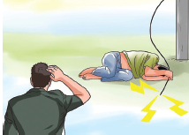
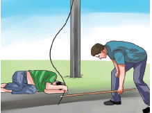
More to Know
Thomas Alva Edison (February 11, 1847 – October 18, 1931) was an American inventor. He invented more than 1000 useful inventions and most of them are electrical appliances used in homes. He is remembered for the invention of electric bulb.
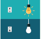
Activity 5
Produce electricity using copper plates, zinc plate, connecting wires, key, beaker and porridge (rice water) [the older the porridge the better will be the current] Arrange copper and zinc plates in series as shown in the figure. Half fill two beakers with porridge. Connect the copper plate with the positive of and LED bulb and zinc to the negative. Observe what happens.
Now you can replace porridge with curd, potato, lemon etc.
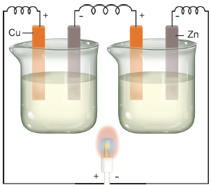
Scientist for the People
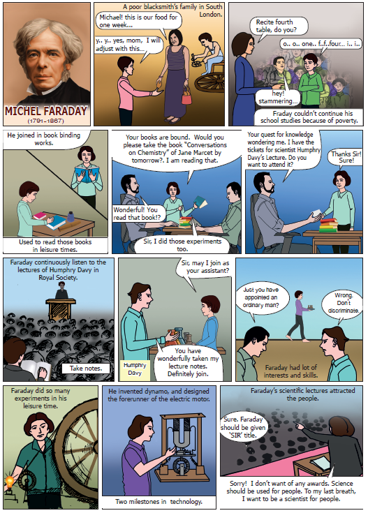